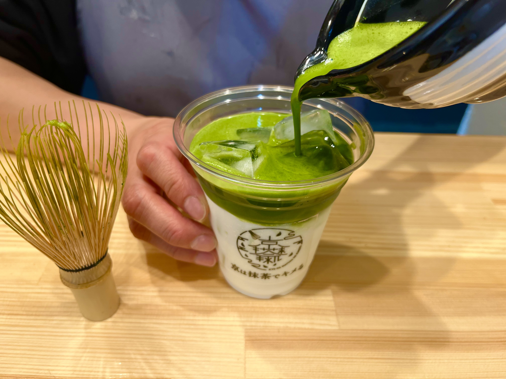
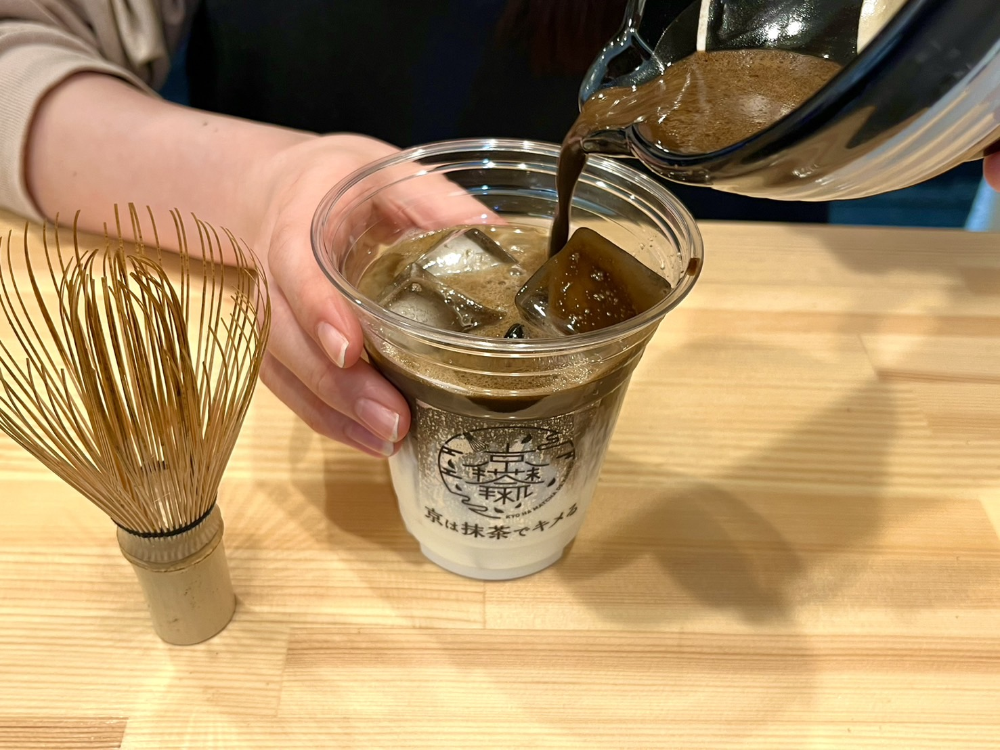
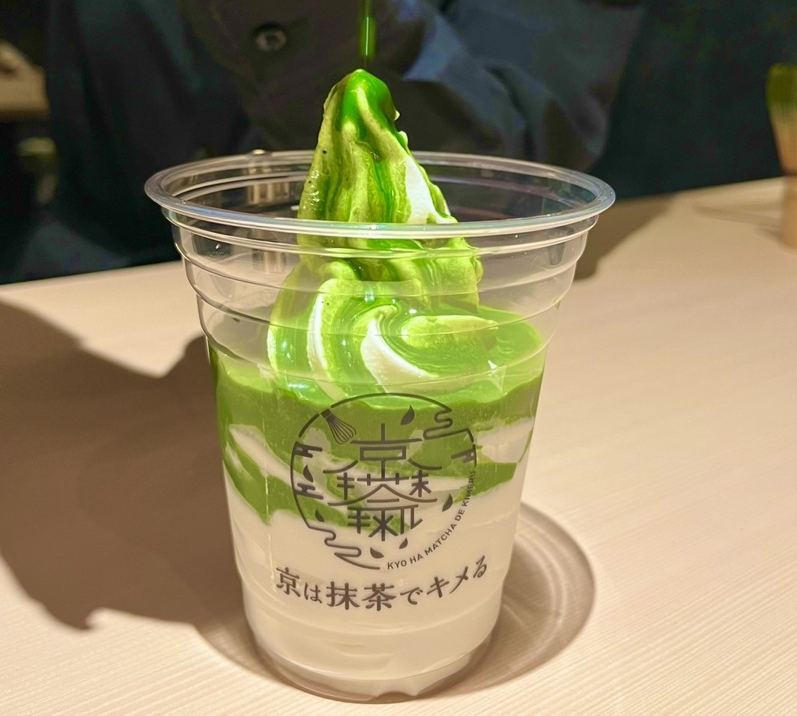
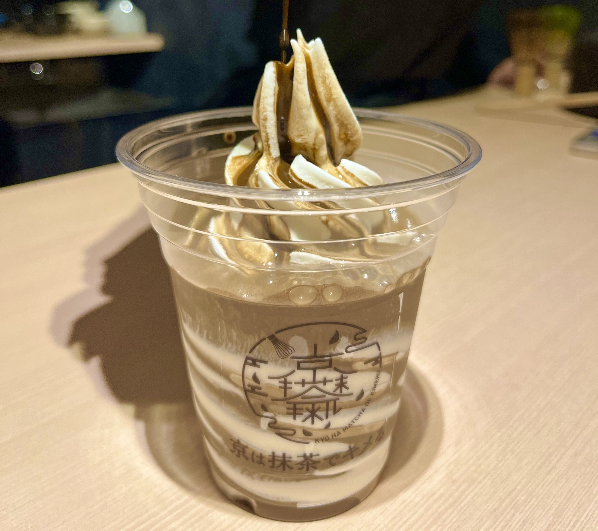
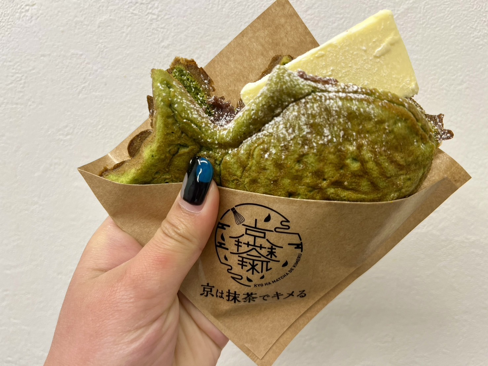
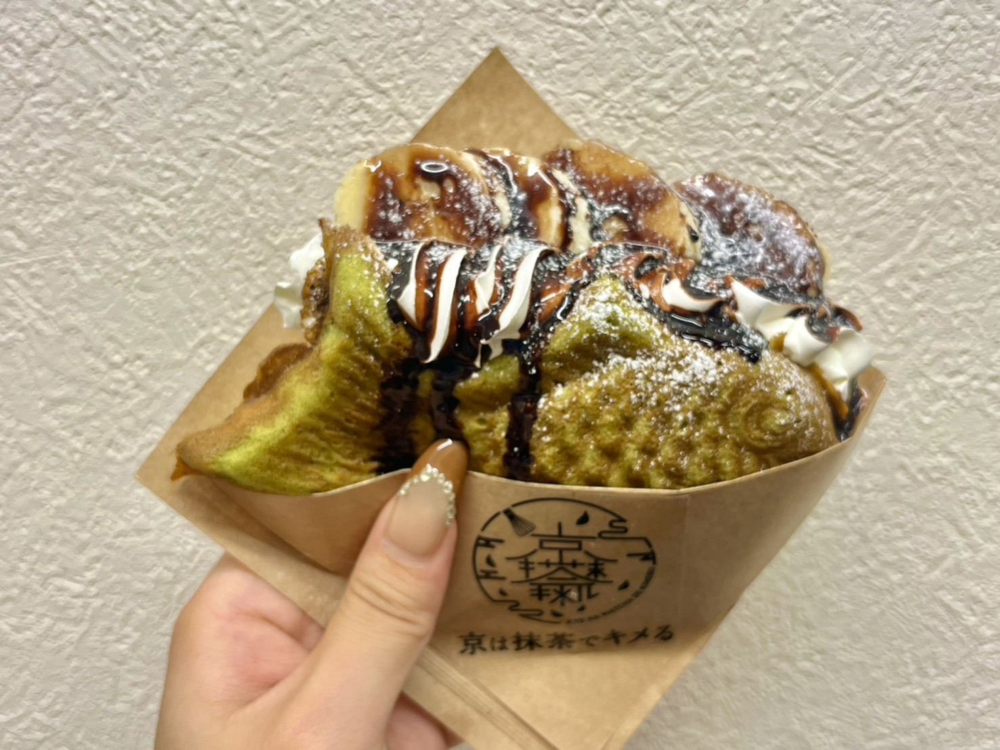

京は抹茶でキメる
最高峰の抹茶をご堪能あれ
私たちはこだわり抜いたオリジナルの宇治抹茶をご提供しております。
一杯一杯心を込めて目の前で丁寧に点てさせていただきます。
お茶の街京都での特別な一杯をお楽しみください。
おすすめ
-

- 抹茶ラテ
- できるだけ抹茶の味を感じていただけるよう、砂糖は入れておりません。 代わりに、あんこをお付けしているので、お好みで溶かしてお召し上がりください。 あんこの上品な甘みと抹茶が程よく調和してくれます。
￥650∼
-

- ほうじ茶ラテ
- 焙煎の強いほうじ茶を使用しているので香り高く深みのある ほうじ茶を味わうことができます。 抹茶ラテと同様に、お茶の香りを感じていただくために砂糖はいれておりません。 お好みであんこを混ぜてお召し上がりください。 あんこの上品な甘みとほうじ茶が程よく調和してくれます。
￥650∼
-

- 抹茶ソフト
- ミルク味のソフトクリームの上から、点てた抹茶を注ぎます。 ソフトの隙間に抹茶が流れ込んでいくので緑と白の層が交互にでき、 見た目も味も格別な一品となっております。
￥1000~
-

- ほうじ茶ソフト
- ミルク味のソフトクリームに点てたほうじ茶を注ぎます。 焙煎の強いほうじ茶を使用しているので、香り高く深い味わいです。 ソフトの隙間にほうじ茶が流れこんでいき、茶色と白の層が交互にできます。 見た目も味も格別な一品となっております。
￥1000~
-

- あんバター
- あんこの甘みとバターの塩気が相まって非常に美味しい定番の一品です。 ラテとの相性も抜群ですので、ぜひご一緒にお召し上がりください。
￥500
-

- チョコバナナ
- たい焼きにチョコバナナ、なかなか見かけない組み合わせですが、当店のたい焼きメニューの中では一番の売れ筋です。ぜひ一度召し上がってみてください。
￥600